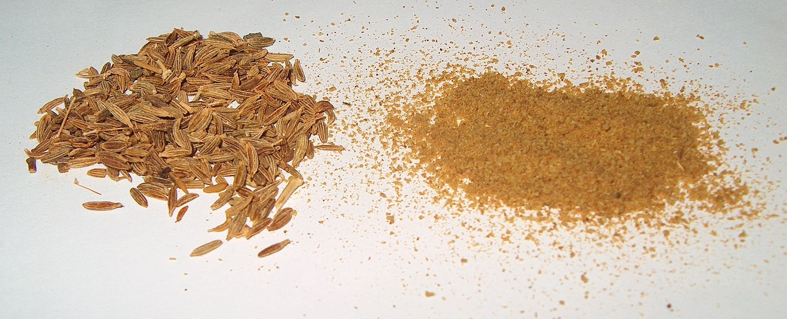

Cumin

Common Name: Onion
Genus Species: Cuminum cyminum
Family: Apiaceae
Origin: East Mediterranean
Cultivation: Iran, Turkey, India, China, Indonesia, Japan, Southern Russia, Morocco,
Mexico
Description: This seed spice is, like coriander, an ancient Mediterranean flavor. It is
popular in Morocco in kabobs and couscous, in England in mulligatawny soup, in German
sausages, pickles, cakes and breads, Dutch cheese, Mexican sauces and chili con carne,
in hummus and in India’s masalas and curries. It is also used in liqueur, such as
kummel, when alcohol is flavored with cumin, caraway, and fennel. Cumin and caraway are
often confused with each other, and with anise, which is sometimes called sweet cumin.
In the U.S.A., this spice is used in condiments, in flavors and in perfumes. Cumin is
grown extensively in Iran, and is used in many Persian recipes. However, the Iranian
spice, black cumin, and the similar spice, nigella, are less popular outside Iran, India
and a few other countries, in which they are mostly used for flavoring rice dishes.
Recipes that Use Cumin: